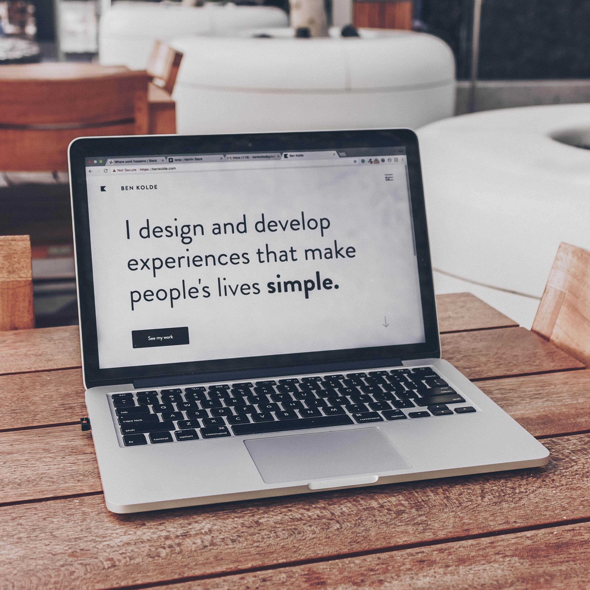
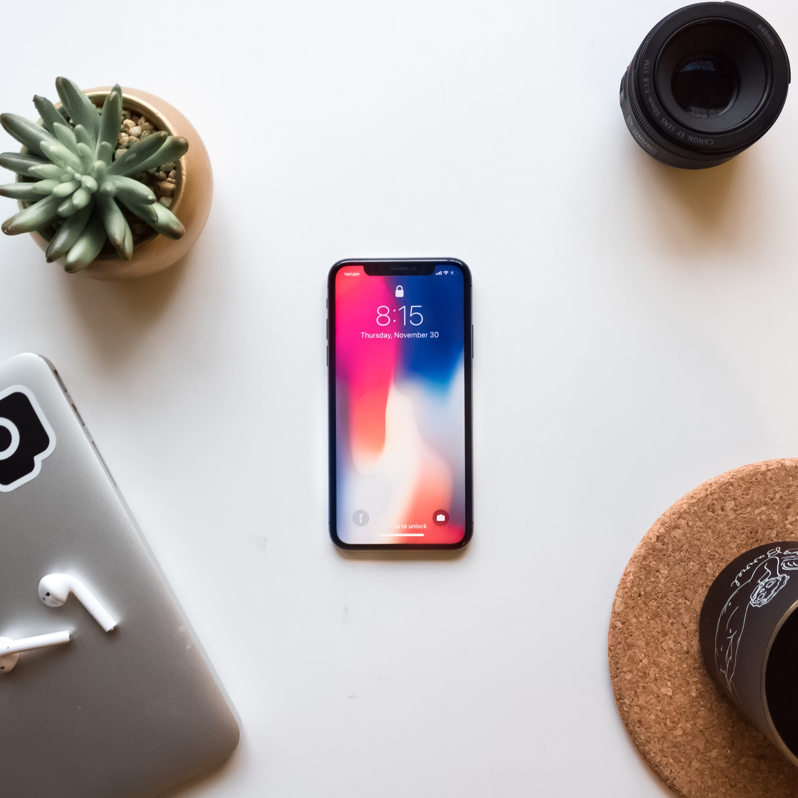
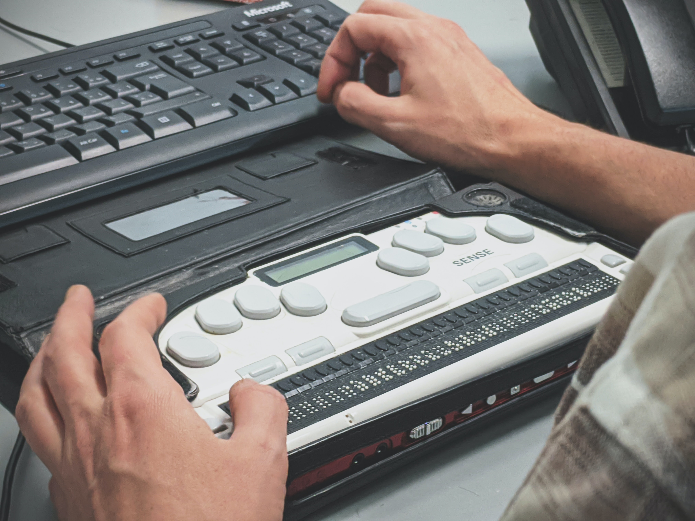

What to know?


Smartphones And Its Accessibility Features
Understand how mobile technology comes into play and what new challenges smartphones bring to the table. See what accessibility features are currently offered and how they work for the mobile world, as well as apps that have been developed to tackle these issues.

More User Cases and technology
Read up on other interesting use cases as well as other forms of technology and how it has been adapted for blind and visually impaired users. Learn about some older technology, as well as some new technology. View examples that might inspire more inclusive design practices in the future.